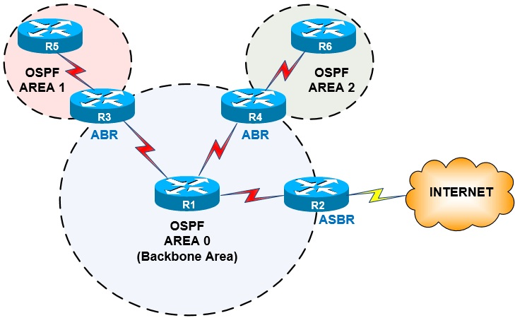

Strona główna
To strona edukacyjna, na której wyjaśniono działanie protokołu OSPF (Open Shortest Path First) oraz sposób, w jaki routery automatycznie wyznaczają najlepsze trasy przesyłania pakietów w sieci komputerowej.
OSPF w skrócie
- jest protokołem routingu dynamicznego,
- należy do protokołów stanu łącza,
- jest otwartym standardem, więc działa na urządzeniach różnych producentów,
- najlepszą trasę wybiera na podstawie kosztu łącza,
- szybko reaguje na awarie i dobrze sprawdza się w średnich i dużych sieciach.
Routing
Routing (trasowanie) to wybieranie drogi, którą pakiet IP ma przejść z jednej sieci do drugiej. Robi to router, czyli urządzenie łączące różne sieci.
Router sprawdza adres docelowy pakietu i szuka go w swojej tablicy routingu. Gdy znajdzie pasującą trasę, wysyła pakiet do następnego routera (ang. next hop) przez odpowiedni interfejs.
Co zawiera tablica routingu?
- adres sieci docelowej wraz z maską,
- adres następnego routera lub interfejs wyjściowy,
- metrykę, czyli liczbę oceniającą, jak dobra jest trasa,
- źródło trasy, np. sieć podłączona bezpośrednio, trasa statyczna lub protokół dynamiczny.
Routing statyczny i dynamiczny
Statyczny
Trasy wpisuje ręcznie administrator. Jest to proste, ale gdy łącze ulegnie awarii, router sam nie zmieni trasy. Dobrze sprawdza się w małych sieciach.
Dynamiczny
Routery wymieniają informacje za pomocą protokołu routingu (np. RIP, EIGRP lub OSPF) i same aktualizują trasy. Jest to wygodne w większych sieciach.
IGP i EGP
Protokoły IGP działają wewnątrz jednej organizacji, czyli jednego systemu autonomicznego. Należą do nich OSPF, RIP i EIGRP. Protokoły EGP, np. BGP, łączą różne systemy autonomiczne, na przykład sieci różnych operatorów internetowych.
Odległość administracyjna
Router może poznać tę samą sieć z kilku źródeł. Wtedy wybiera źródło z mniejszą odległością administracyjną (AD). Poniżej znajdują się wartości domyślne w urządzeniach Cisco.
| Źródło trasy | Odległość administracyjna |
|---|---|
| Sieć podłączona bezpośrednio | 0 |
| Trasa statyczna | 1 |
| EIGRP | 90 |
| OSPF | 110 |
| RIP | 120 |
OSPF
OSPF (Open Shortest Path First) to protokół routingu dynamicznego typu IGP. Opisuje go standard RFC 2328 (dla IPv4). Nazwa „Open” oznacza, że protokół jest otwartym standardem, a „Shortest Path First” – że do wyliczania tras używa algorytmu najkrótszej ścieżki Dijkstry (algorytm SPF).
Protokół stanu łącza
W protokołach wektora odległości (np. RIP) router wie głównie, ile „skoków” dzieli go od sieci. W OSPF każdy router opisuje swoje łącza i wysyła ten opis do pozostałych routerów. Dzięki temu wszystkie routery w obszarze mają taką samą „mapę” sieci i same wyliczają z niej trasy.
Zalety
- szybka reakcja na zmiany w sieci,
- obsługa masek o różnej długości (VLSM),
- wybór trasy według kosztu, a nie samej liczby skoków,
- dobra skalowalność dzięki obszarom,
- otwarty standard.
Wady
- trudniejsza konfiguracja niż w RIP,
- większe wymagania co do pamięci i procesora routera,
- wymaga przemyślanego podziału na obszary.
Ważne pojęcia
| Pojęcie | Znaczenie |
|---|---|
| Router ID | 32-bitowy identyfikator routera zapisywany jak adres IPv4, np. 1.1.1.1. |
| Sąsiad (neighbor) | Router w tej samej sieci, z którym nawiązano relację OSPF. |
| LSA | Komunikat z informacją o łączach i sieciach (Link State Advertisement). |
| LSDB | Baza danych stanu łącza, czyli zbiór wszystkich otrzymanych LSA. |
| SPF | Algorytm, który z bazy LSDB wylicza najlepsze trasy. |
Dane techniczne
- OSPF działa bezpośrednio na IP i używa numeru protokołu 89 (nie korzysta z TCP ani UDP),
- wiadomości wysyła na adresy multicast
224.0.0.5(wszystkie routery OSPF) i224.0.0.6(routery DR i BDR), - domyślna odległość administracyjna wynosi 110.
Obszary OSPF
W dużej sieci baza LSDB mogłaby być ogromna, a router często liczyłby trasy od nowa. Dlatego sieć dzieli się na obszary (ang. areas). Router zna szczegółowo tylko swój obszar, a o pozostałych dostaje skrócone informacje.
Obszar o numerze 0 to obszar szkieletowy (backbone). Każdy inny obszar musi być z nim połączony.

Rodzaje routerów
| Rodzaj | Opis |
|---|---|
| Router wewnętrzny | Wszystkie jego interfejsy należą do jednego obszaru. |
| Router szkieletowy | Ma co najmniej jeden interfejs w obszarze 0. |
| ABR | Router graniczny obszarów (Area Border Router). Ma interfejsy w kilku obszarach i przekazuje informacje między nimi. |
| ASBR | Router graniczny systemu autonomicznego. Wprowadza do OSPF trasy z innego źródła, np. z innego protokołu routingu. |
Po co obszary?
- mniejsza baza LSDB na każdym routerze,
- rzadsze i szybsze obliczanie tras,
- zmiany w jednym obszarze mniej obciążają resztę sieci,
- możliwość łączenia adresów (sumaryzacji) na routerach ABR.
Istnieją też obszary specjalne, np. stub, totally stubby i NSSA. Ograniczają one rodzaje informacji przesyłanych do obszaru, aby routery miały mniejsze tablice. Na początek wystarczy wiedzieć, że istnieją.
OSPFv2 i OSPFv3
OSPFv2 służy do routingu IPv4. Dla sieci IPv6 powstała nowa wersja – OSPFv3 (RFC 5340). Obie działają według tych samych zasad: sąsiedzi, LSA, SPF i obszary.
| Cecha | OSPFv2 | OSPFv3 |
|---|---|---|
| Obsługiwany protokół | IPv4 | IPv6 (w nowszych wersjach także IPv4) |
| Standard | RFC 2328 | RFC 5340 |
| Adresy multicast | 224.0.0.5 i 224.0.0.6 | FF02::5 i FF02::6 |
| Adres źródłowy pakietów | adres IPv4 interfejsu | adres link-local interfejsu |
| Włączanie na interfejsie | polecenie network w procesie OSPF |
polecenie ipv6 ospf na interfejsie |
| Uwierzytelnianie | wbudowane w protokół | przez IPsec |
| Router ID | 32 bity | 32 bity (nadal zapisywany jak adres IPv4) |
W OSPFv3 Router ID nadal ma 32 bity. Jeśli router nie ma żadnego adresu IPv4, trzeba ustawić go ręcznie.
Przykładowa konfiguracja Cisco IOS
Poniżej znajduje się przykładowa konfiguracja routera R1, który ma sieć LAN 192.168.1.0/24 oraz łącza do routerów R2 i R3 (łącze do R3 ma ręcznie ustawiony większy koszt). Wszystkie interfejsy należą do obszaru 0. Pozostałe routery konfiguruje się podobnie – zmieniają się tylko adresy i polecenia network.
enable
configure terminal
hostname R1
interface loopback 0
ip address 1.1.1.1 255.255.255.255
exit
interface gigabitethernet 0/0
ip address 192.168.1.1 255.255.255.0
no shutdown
exit
interface gigabitethernet 0/1
ip address 10.0.12.1 255.255.255.252
no shutdown
exit
interface gigabitethernet 0/2
ip address 10.0.13.1 255.255.255.252
ip ospf cost 100
no shutdown
exit
router ospf 1
router-id 1.1.1.1
auto-cost reference-bandwidth 10000
network 192.168.1.0 0.0.0.255 area 0
network 10.0.12.0 0.0.0.3 area 0
network 10.0.13.0 0.0.0.3 area 0
passive-interface gigabitethernet 0/0
end
copy running-config startup-configObjaśnienie poleceń
| Polecenie | Znaczenie |
|---|---|
router ospf 1 |
Uruchamia proces OSPF o lokalnym numerze 1. Numer ma znaczenie tylko na tym routerze. |
router-id 1.1.1.1 |
Ustawia Router ID ręcznie. |
auto-cost reference-bandwidth 10000 |
Ustawia przepustowość referencyjną na 10 000 Mb/s. Należy ustawić tę samą wartość na każdym routerze. |
network 10.0.12.0 0.0.0.3 area 0 |
Włącza OSPF na interfejsach, których adres pasuje do podanej sieci. Używa się maski odwrotnej (wildcard), a sieć trafia do obszaru 0. |
passive-interface gigabitethernet 0/0 |
Sieć LAN jest ogłaszana, ale przez ten interfejs nie są wysyłane pakiety Hello, bo nie ma tam innych routerów. |
ip ospf cost 100 |
Ustawia ręcznie koszt interfejsu. |
copy running-config startup-config |
Zapisuje konfigurację, aby nie zniknęła po restarcie routera. |
Polecenia sprawdzające
| Polecenie | Co pokazuje |
|---|---|
show ip ospf neighbor |
Listę sąsiadów i ich stany (poprawny stan to FULL). |
show ip route ospf |
Trasy w tablicy routingu poznane przez OSPF (oznaczone literą O). |
show ip ospf interface brief |
Interfejsy z włączonym OSPF, ich obszar i koszt. |
show ip protocols |
Informacje o uruchomionych protokołach routingu, w tym Router ID. |
show ip ospf database |
Zawartość bazy LSDB. |